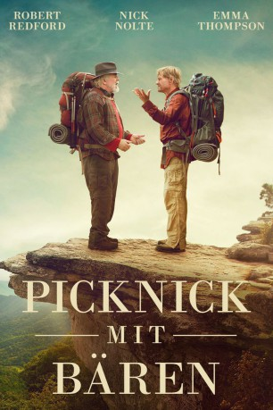

gesehen am 24.03.2016
gesehen am 24.03.2016Alternativ: A Walk in the Woods gesehen am 24.03.2016
 
 IMDB-Wertung: 6.3 / 10
IMDB-Wertung: 6.3 / 10  Metascore:
Metascore: 
Zwei Jahrzehnte lang hat der Schriftsteller Bill Bryson in England gelebt. Nun kehrt er in sein Vaterland, die USA, zurück. Um eine neue Verbindung zu seiner alten Heimat und einem seiner ältesten Freunde herzustellen, entschließt sich Bryson, mit Stephen Katz zusammen eine Wanderung zu unternehmen. Auf dem 2.100 Meilen langen Appalachian Trail will er das östlichste Gebirge der USA durchschreiten. Doch seit der gemeinsamen Schulzeit, in der die Männer beste Freunde waren, ist viel Zeit vergangen. Sie haben sich in unterschiedliche Richtungen entwickelt und einander aus den Augen verloren. Bei ihrer Wiedervereinigung auf der gemeinsamen Reise fordert die ungewohnte ständige Gesellschaft des jeweils anderen ihnen deshalb mehr als nur körperliches Durchhaltevermögen ab.
Jahr: 2015
Dauer: 104 Minuten
FSK: 0
Land: USA Studio: Broad Green PicturesTonspuren: DTS - ,
Untertitel: Deutsch,
Auflösung: 1080p (1920x800) Größe: 7915 MB
Genre: Drama, Komödie, Abenteuer, Biographie
Regisseur: Ken Kwapis
Drehbuch: Michael Arndt, Bill Holderman, Bill Bryson
Soundtrack: Nathan Larson
Darsteller:
 Robert Redford als Bill Bryson
Robert Redford als Bill Bryson Nick Nolte als Stephen Katz
Nick Nolte als Stephen Katz Emma Thompson als Catherine Bryson
Emma Thompson als Catherine Bryson Mary Steenburgen als Jeannie
Mary Steenburgen als Jeannie Nick Offerman als REI Dave
Nick Offerman als REI Dave Kristen Schaal als Mary Ellen
Kristen Schaal als Mary Ellen R. Keith Harris als Sam Bryson
R. Keith Harris als Sam Bryson Randall Newsome als TV Host
Randall Newsome als TV Host Sandra Ellis Lafferty als Widow
Sandra Ellis Lafferty als Widow Danny Vinson als Georgia Cab Driver
Danny Vinson als Georgia Cab Driver Alex Van als Bunkhouse Peter
Alex Van als Bunkhouse Peter Perry Ball als Driver , uncredited
Perry Ball als Driver , uncredited Fred Galle als News Anchor , uncredited
Fred Galle als News Anchor , uncredited Walter Hendrix III als Laundry Patron , uncredited
Walter Hendrix III als Laundry Patron , uncredited Joel Rogers als Funeral Director , uncredited
Joel Rogers als Funeral Director , uncredited Patti Schellhaas als Restaurant Diner , uncredited
Patti Schellhaas als Restaurant Diner , uncreditedDatei: X:\2015(N-Z)\Picknick mit Bären (2015, FSK0, 1920x800).mkv seit 25.02.2016
Festplatte: HD 2015(A-Z)
 Es gibt insgesamt 161 Filme in der Gruppe '2015(N-Z)'
Es gibt insgesamt 161 Filme in der Gruppe '2015(N-Z)'